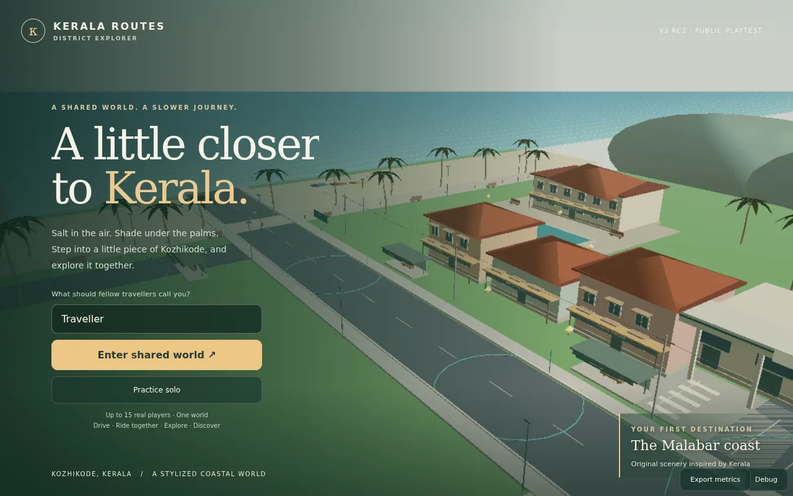

One shared world
The RC2 project brings players into one shared world with support for up to 15 real players.
MULTIPLAYER × EXPLORATION
A shared Kerala-inspired world, built for drivers and travellers.

01 / THE IDEA
Kerala Routes explores a simple idea: one player drives a bus while other real players board, travel and explore. It began with compact Kozhikode routes and grew into a connected world inspired by five Kerala districts.
02 / MY CONTRIBUTION
I shaped the Kerala setting, route ideas and the driver/passenger experience, then iterated on the project with AI-assisted development. Testing on a phone and laptop helped me identify lag, reconnection problems and the need for simpler controls. My focus has been turning a large feature idea into a playable experience.
Development approach: AI-assisted implementation with iterative feature design and device playtesting. Project code and release notes are available on GitHub.
03 / THE EXPERIENCE
The RC2 project brings players into one shared world with support for up to 15 real players.
Bus controls, stops and passenger boarding support different ways of travelling through the world.
Routes, missions, shops and progression give journeys a purpose beyond reaching the next stop.
Streaming and graphics options help balance visual detail with phone and laptop performance.
04 / BUILD NOTES
Multiplayer adds two problems at once: the world needs to render smoothly, and players need consistent updates. Early playtests showed laptop lag and frequent reconnecting even when the phone experience felt better.
Development focused on reducing repeated multiplayer data, improving reconnection behaviour and streaming parts of the world. Testing both routes and both device types helped guide the changes instead of judging performance from a single setup.
05 / WHAT I LEARNED
06 / STILL EXPLORING
This remains a public playtest. The next goals include more convincing Kerala places, smoother travel, and continued mobile performance improvements. The scenery is stylized rather than a street-accurate map.
KEEP EXPLORING
Kerala Sky Runner ↗